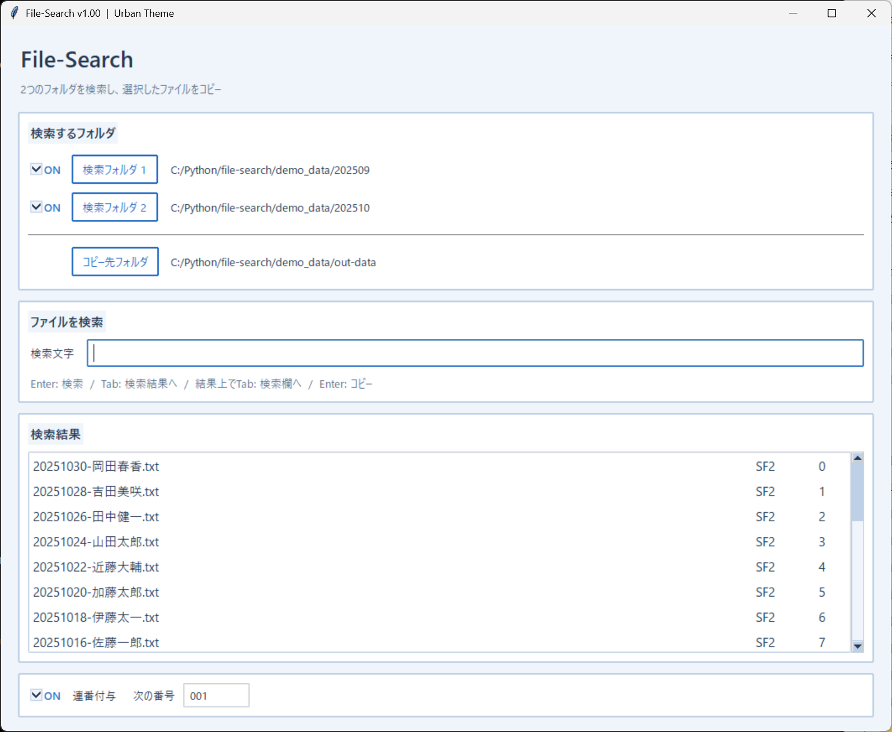

最初に試してほしい検索
探したい氏名の漢字が変換しにくいときは、短い単語を続けて入力するだけ。文章にする必要はありません。
検索欄への入力：
「吉田」で吉・田、「美しい」で美、「咲く」で咲、の4文字が一致し、
吉田美しい咲く「吉田」で吉・田、「美しい」で美、「咲く」で咲、の4文字が一致し、
20251028-吉田美咲.txt が候補の上位に表示されます。付属の30件のデモデータでは、この入力で次の順序になります。
| 一致文字数 | 検索結果の例 |
|---|---|
| 4文字 | 20251028-吉田美咲.txt |
| 3文字 | 20250927-田中美咲.txt |
| 2文字 | 20250929-吉田花子.txt |
入力した漢字がファイル名の離れた場所にあっても一致し、一致文字数の多い順に並びます。背景色も一致度に応じて変わります。
読み仮名や言葉の意味を解析しているのではありません。入力した文字がファイル名に含まれるかを1文字ずつ数える仕組みです。
画面の概要

File-Searchは、最大2つのフォルダにあるファイルを名前から検索し、選んだファイルを指定先へコピーするためのツールです。検索対象のフォルダをON/OFFできます。
起動と初期設定
- 同じフォルダに
file-search.py、design_theme.py、design_theme.jsonを配置します。Python 3.10以上を想定しています。 - Windowsのターミナルなどで次のコマンドを実行します。
python file-search.py - 「検索フォルダ 1」「検索フォルダ 2」を押して、検索したいフォルダをそれぞれ指定します。使用するフォルダのチェックをONにします。
- 「コピー先フォルダ」を押して、コピー先を指定します。
フォルダ指定やON/OFFなどの変更は
file-search.cfg に自動保存されます。既存設定がある場合は上書きせずバックアップしてから更新してください。検索の方法
- 「検索文字」欄に文字を入力します。氏名を通常どおり入力するほか、変換しやすい短い語句をつないで必要な漢字を入力できます。文章にする必要はありません。
- Enter で検索すると、一致文字数が多いファイルが上に並びます。背景の淡い青は一致度に応じて変化します。
- Tab で検索結果の先頭へ移動し、↑ / ↓ でファイルを選びます。
- 検索結果上で Tab を押すと検索欄へ戻ります。入力文字が選択され、次の検索を始められます。
| 検索欄への入力例 | 探したい氏名 | 一致文字数 |
|---|---|---|
吉田美しい咲く | 吉田美咲 | 4 |
我慢妻功績 | 我妻功 | 3 |
小鳥遊ぶ透ける | 小鳥遊透 | 4 |
烏龍丸太毅然 | 烏丸毅 | 3 |
この検索は漢字の読みや日本語の意味を解析する機能ではありません。入力文字がファイル名に含まれているかを文字単位で調べ、一致文字数の多い順に並べます。
コピー・連番付与
- コピー先フォルダを選んだ状態で、検索結果から目的の行を選択します。
- Enter を押すと、そのファイルをコピー先へコピーします。
- 「連番付与」をONにすると、
001_のような番号がファイル名の先頭に付きます。画面下部の「次の番号」を変更することもできます。
上書きに注意：コピー先に同名ファイルがある場合、確認ダイアログが表示されます。「いいえ」で中止できます。コピーが成功したときだけ連番が進みます。
コピー成功後は検索欄へ戻ります。テスト時は、必ず架空データと専用のコピー先フォルダを使用してください。
付属デモデータで試す
配布物には2025年9月・10月の架空の氏名ファイルを各15件、合計30件収録しています。
demo_data/
202509/ 9月のダミー15件
202510/ 10月のダミー15件
検索例一覧.csv 検索キーワードと対象ファイル
使い方.txtそれぞれの月フォルダを「検索フォルダ 1」「検索フォルダ 2」に設定してください。検索例一覧.csv には、短い単語を使った検索例と一致数・色分け確認用の例があります。
よくある確認事項
| 状態 | 確認すること |
|---|---|
| 検索しても出ない | 検索フォルダの指定先とON/OFF、ファイルの存在を確認します。 |
| Tabで選択できない | 先に検索欄でEnterを押して結果を表示し、Tabで移動してください。 |
| コピーされない | コピー先フォルダ、対象ファイル、書込権限、上書き確認ダイアログを確認します。 |
| 設定が変わった | file-search.cfg は自動保存されます。既存設定はバックアップしてください。 |
本ツールは実用プログラムのテーマ適用例です。デザインはGUI Design Studioで作成したUrbanテーマを使用しています。